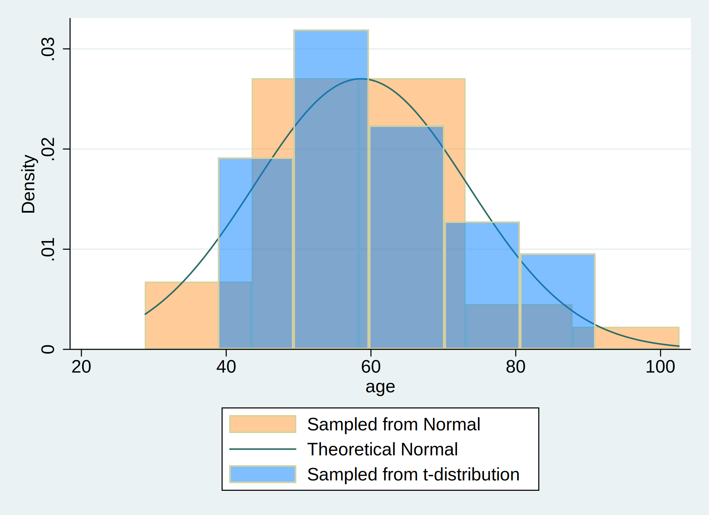

dyndoc hw4.shi.jiayi.do saving (hw4.shi.jiayi.html) replace
. clear all
. **1. Data simulation: Initialize a dataset with 30 observations**
. set seed 20240425
. set obs 30
.
. **2. Variable generation: Create an age variable with a mean of 57 years a
> nd a standard deviation of 15**
. capture drop age age_t
. gen age=(rnormal()*15)+57 //normal distribution
. gen age_t=(rt(_N)*15)+57 //t_distribution
.
. **3. Graphical Representation: Plot a histogram of the age variables, and
> overlay it with a theoretical normal distribution curve**
. hist age, ///
> fcolor(orange%40) /// simulated normal
> addplot(hist age_t, fcolor(midblue%50)) /// simulated t-distribution
> normal /// theoretical normal
> legend(on ///
> lab(1 "Sampled from Normal") ///
> lab(2 "Theoretical Normal") ///
> lab(3 "Sampled from t-distribution") ///
> )
. graph export hw4_age.png, replace
Figure 1: Histogram of age distribution

Footnote Distribution of $\text{Age, years} \sim \mathcal{N}(\mu=57,,\sigma^{2}=225)$
. display c(N)
30
. display c(k)
2
. list in 1/5
+---------------------+
| age age_t |
|---------------------|
1. | 52.40395 55.15607 |
2. | 49.36994 79.45469 |
3. | 48.2841 71.07404 |
4. | 46.39054 70.99165 |
5. | 102.6172 56.76484 |
+---------------------+
Results We identified the newly created .html file in our directory and opened it to compare its format to this markdown file. And we saw all that we had made, and behold, it was very good. Ghastly macros in the original markdown language were now rendered as neatly formatted results. There were 30 observations and 2 variables in the simulated dataset. The histogram of age ($\text{Age, years} \sim \mathcal{N}(\mu=57,,\sigma^{2}=225)$) demonstrated the distribution of age in two hypothetical populations under normal distribution and t-distribution, respectively.
Conclusions In walking you through syntax, do-file creation, queued commands, generated results, through to embedding neatly formatted output in .html, we believe you now have a sense of what that Stata might offer you. These ideas can be generalized to embedding results in .xlsx, .log, .dta, .docx, etc.